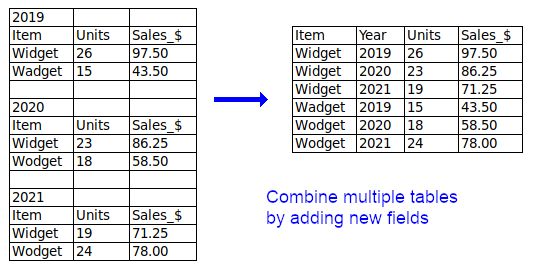

1 MAKE YOUR DATA SOFTWARE READY
1.1 Use non-proprietary formats
1.1.1 Why?
- Data will be able to be opened by multiple software types
- It could “future proof” data; forward compatibility
- Makes data more socially fair (open data), financial fair
- To align better with the FAIR principles (findability, accessibility, interoperability, reusability)
- Without these, being to use the data as an end user becomes increasingly difficult and will deter people from wanting to use it
- Proprietary software requires licenses, which not everyone can afford/has access to.
- Ensuring data readability across multiple platforms and into the future.
- Contributes to long-term, consistent data collection from multiple data providers
1.1.2 Key Information
- Having open/flat files like csv is useful because they are easily manipulated
- Having your data stored in a relational database can help with ease of conversion to csv/ dwc-a or obis
- How to read said format. Clearly identifying how machines can read format.
1.1.3 Top 5 References
- https://www.go-fair.org/fair-principles/
- https://www.archives.gov/records-mgmt/policy/transfer-guidance-tables.html
- netCDF spec
- Ascii csv spec (tsv)
- Imagery format specs…
1.1.4 Is anything missing?
- Even though flat files are easy to use, it can be a challenge to know what to place into them. It is also important to have guidance in what to expect as contents in these files (ie unique identifiers, tidy data, basically the other topic).
- What to do when a proprietary format is what your lab uses?!
1.2 Structure data in tidy/long format

data table taken from: https://www.datafix.com.au/BASHing/2022-01-12.html
1.2.1 Why?
- Easier to analyze.
- more machine readable
- More likely to be usable with other software
- Makes code+analyses more reusable
- Easier to aggregate data across multiple files
- Makes it easier to add a new “MeasurementType” without modifying all past files & software
1.2.2 Key Information
- Example: All scientific names as columns (non-tidy/wide) vs. a single column (tidy/long)
- Darwin Core will require a long format.
- Does tidy/long format (and adding controlled vocab) make the data more machine-readable/actionable?
- Don’t want to tell people that they can’t use relational databases
- Can be tricky working with multiple column datatypes
- Don’t put metadata at the top of your spreadsheet
- Keep it tabular
1.2.3 Top 5 References
- Wickham, H. . (2014). Tidy Data. Journal of Statistical Software, 59(10), 1–23. https://doi.org/10.18637/jss.v059.i10
1.3 Follow ISO 8601 for dates
1.3.1 Why?
- Users have to know where you collected this data.
- Consistent across multiple standards - netCDF, DwC, EML
- Well-defined international standard
- Machine readable
- Incorporated into many other standards (e.g. DwC, ISO 19115)
- Clarity of when something is happening across timezones, time changes, etc
- Avoid confusion, internationally understandable, interoperable
- You are able to match information from different data sources using a standardized time stamp.
- Better software integration of time elements (example: time slider on a map)
- Python or R will expect to see time in a particular format.
- Local time can get confusing, must use UTC.
1.3.2 Key Information
- Lat
- Lon
- Vertical component (altitude, depth, height off bottom, etc)
- Table from Wiki showing examples of all possible formats
- Example of Zulu vs local
- Example of date range
- Timezones
- Daylight savings
- Decimal time
- Some datasets (especially using EventCore DwC-A) will be increasingly using date ranges, which seem to break certain packages for data exploration (YYYY-MM-DDTHH:MM:SS.MMMZ/YYYY-MM-DDTHH:MM:SS.MMMZ)
- As more event-core contributions are made, this might become more of an issue during the manipulation of data; consider installing fix libraries or contacting github communities responsible for issue libraries for fixes in the future.
- Date parts
- Offset from UTC
- Just put your time in this format. 2022-12-01T18:30:35+00:00
1.3.3 Top 5 References
- Getting lat/lon to decimal degrees: https://ioos.github.io/bio_mobilization_workshop/03-data-cleaning/index.html#getting-latlon-to-decimal-degrees
- CF documentation - https://cfconventions.org/Data/cf-conventions/cf-conventions-1.10/cf-conventions.html#latitude-coordinate
- EML documentation:
- High level: https://eml.ecoinformatics.org/schema/index.html (find “bounding Coordinates)
- spatialRaster:
- ISO 8601 wiki: https://en.wikipedia.org/wiki/ISO_8601
- R package lubridate
- Python go-to package
- https://xkcd.com/1179/
- Article on datteime uncertainty: https://www.datafix.com.au/BASHing/2020-02-12.html
1.3.4 Is anything missing?
- Should datum or projection be prescribed (ie, must it be WGS84?)
- Understanding the metadata schema/data model you’re using and how it handles that information.
- Netcdf: https://cfconventions.org/Data/cf-conventions/cf-conventions-1.10/cf-conventions.html#coordinate-types
- Iso-19115-2:
- EML (dataset level, spatialRaster, spatialVector)
- How to convert between deg-min-sec and decimal, e.drounding considerations
- How to convert between projections (if one is prescribed)
- More wide-spread date range support
- More guidelines on how to enter date-ranges
- Can we represent datetime uncertainty?
- Parsers handle dates differently from each other. So sometimes it matters if one uses 2022-12-01 vs 20221201 vs 2022_12_01? (sometimes it depends on the - parser being used to interpret the date)
- What can we do to support data validation tools so data are checked as they are submitted?
- Some spreadsheets don’t export dates as ISO
1.5 Record latitude and longitude in decimal degrees in WGS84
1.5.1 Why?
- Users have to know where you collected this data, which requires a latitude, longitude, reference system and uncertainty.
- Decimal-degrees avoids special symbols (° or ’) which is preferable for machine readable formats
- WGS84 is a reference coordinate system that is widely used and incorporated in many GPS units and tools, and recognized as a standard by many government agencies.
1.5.2 Key Information
- If possible, encourage data providers to confirm, and record, the WGS84 datum is selected prior to data collection.
- Understand and report the device/instrument uncertainty associated with your coordinates because it affects the usability of your data.
- Consider including the vertical component (altitude, depth, height off bottom, elevation, etc)
- Generally speaking, degrees-minutes-seconds (DMS) can be converted to decimal-degrees (DD) by:
- DD = d + (min/60) + (sec/3600)
- Watch out for mixed formats, like degrees, decimal-minutes (DDM).
- Degrees West and South become negative in DD.
- Values for longitude range from -180 to 180
- Values for latitude range from -90 to 90
1.5.3 Top 5 References
- Existing R/python/ESRI packages/functions
- Getting lat/lon to decimal degrees
- Something that gives more background on precision, like this: https://www.trekview.org/blog/2021/reading-decimal-gps-coordinates-like-a-computer/#a-note-on-accuracy Degree-Minute-Seconds -> DD calculator: https://www.fcc.gov/media/radio/dms-decimal

1.6 Use globally unique identifiers
1.6.1 Why?
- It can be useful to have unique identifiers to unambiguously identify granules of information, e.g. dataset, collection, database, taxonomic concept, etc. This will allow users to precisely refer to the data and allow your data to remain identifiable when aggregated with other datasets.
- To be able to uniquely identify a record in your data system or across data systems. Useful to create relational databases or merge records.
- Although it increases workload, it safeguards against confusion and inefficiency in the future.
1.6.2 Key Information
- There are good reasons to keep an identifier opaque, i.e. it does not indicate anything about the content of information it points to. However, there are also transparent, or semi-opaque identifiers in use that take advantage of semantics to guide humans as well as machines.
- One way to create a unique identifier is concatenation of sampling event, location, time, enumeration of unique observation or event. #Station_95_Date_09JAN1997:14:35:00.000
- Some prefer using opaque identifiers. #10FC9784-B30F-48ED-8DB5-FF65A2A9934E
- If there is an existing globally unique identifier, it’s usually a good idea to use it (i.e. when using a taxonomic authority like WoRMS and applying their LSID).
- It is important to manage any identifiers you create, if they are not managed by an authority (e.g. DOIs).
- Important that it be persistent (consider samples possibly moving between institutions)
1.6.3 Top 5 References
- Packages to generate uuids:
- Guidance on how to use GUIDs (Globally Unique Identifiers) to meet specific requirements of the biodiversity information community
- Use of globally unique identifiers (GUIDs) to link herbarium specimen records to physical specimens
- A Beginner’s Guide to Persistent Identifiers